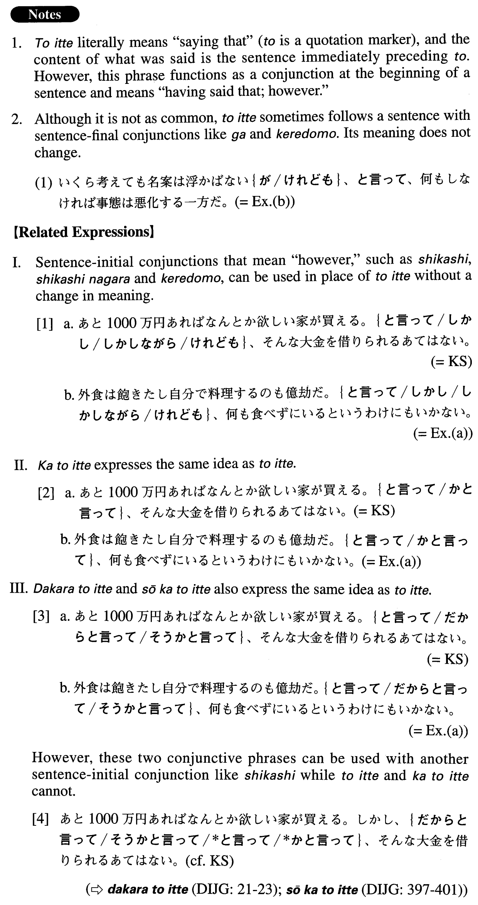

←
DoJG
→
と言って
(A. 635)
Example sentences
(ks).
あと１０００万円あればなんとか欲しい家が買える。
と言って
、そんな大金を借りられるあてはない。
If we had another ten million yen, we could manage to buy the house we want. Having said that, we don't know how we could borrow that much money.
(a).
外食は飽きたし自分で料理するのも億劫だ。
と言って
、何も食べずにいるというわけにもいかない。
I've gotten tired of eating out, and cooking for myself is tiresome, too. But, I have to eat something (literally: I can't just not eat).
(b).
いくら考えても名案は浮かばない。
と言って
、何もしなければ事態は悪化する一方だ。
No matter how hard I think, I cannot come up with a good idea. However, the situation will get only worse if I don't do anything about it.
(c).
彼女と別れるのは絶対いやだ。
と言って
、妻と離婚する勇気もない。
I definitely don't want to leave my girlfriend. Having said that, I don't have the courage to divorce my wife, either.
(d).
最近は少し運動するとすぐ疲れてしまう。
と言って
、何もしないと体が衰えるばかりなので何かしなければならない。
These days I get tired quickly after doing a little exercise. However, I have to do something because if I don't do anything, l'll only get weaker.
(e).
アメリカで自分の能力をためすのも面白いかもしれない。
と言って
、英語ができなければどうしようもないが。
It might be interesting for you to try out your skills in America. But, it won't do any good if you cannot speak English.
Formation
Sentence1。
と言って
、Sentence2。
時間がない。
と言って
、この仕事をそのままにしておくことはできない。
I don’t have time. But, I can’t leave this job just as it is
